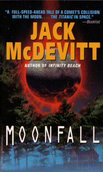

Moonfallby Jack McDevitt
publisher: Eos (Harper Collins)
Fiction, 544 pages | 
(book cover art, Copyright ©1997 John Ennis)
Used with Permission. |
Return to the Book MenuPrevious|Next
Description:
At about the same time that the first full-time moon colony has its grand opening, a rouge comet appears from behind the sun -- and its path is going to make it slam into the moon at an enormous velocity in a matter of days. Will the new residents of the moon survive? Some scientists say it will make a spectacular new crater, but others say it might the end of the moon entirely. How will this affect the lives of those who live on the earth below?
Recommended for: Did you see Armageddon or Deep Impact? They wish they had this story.
Did-you-read questions:
Deadline: February 1, 2005.
These should be easy questions, but you should have the questions ready and keep an eye out during your reading. Each question should be answered with 1-2 sentences.
Note: these questions are not probably not the most important part of the book! Your essay will not have to cover these questions!
- Why is a small portion of the moon cordoned off for Charlie?
- What is the grey haze around the Micro made of?
- What is the exact time that the comet hits?
- Why does the president look like he was mugged?
- What particularly bad thing does Colonel Gallagher try to do?
Report Questions:Deadline: Peer Review Session on February 8, 2005; paper due February 10, 2005.
You should write a 3 - 4 page essay on one of the following questions. Your essay should include examples and references to the book, unless otherwise specified. Page number references are sufficient for citing material from the primary book. If you use outside materials, cite your sources in full. If you would rather write on a different topic, you may, but clear it with Mr. Howe or Ms. Sullivan first.
- President Kollander makes a difficult decision early in the novel about sharing information with the American people. What do you think of his decision, in the end? Would you do things differently? Support your opinion.
- Several people make conscious decisions about being on the last shuttle off the moon. What do you think of their reasons? For example, are some more realistic, heroic, or foolhardy than others?
- At one point in the novel, Marilyn has to make a hard decision about two other people trapped in rising water. Is this moment reflected in the rest of the novel, or does it serve as counterpoint for others' decisions?
- Is this novel realistic, realistic with a few exceptions, completely unrealistic or somewhere in between? Support your opinion with examples from the book.
Graphic and Presentation:
Deadline: February 21 - March 3, 2005.You will give a 10 minute presentation on both of the following:
- Convince your peers that they should (or should not) read this book. (This may include a brief summary of the book.) Give examples of what was cool or worthwhile in the book, and what you got out of it (or didn't).
- Describe a (realistic) science idea that you learned about in this book, citing information from at least 2 external sources (other than the dictionary). If you would like help choosing or understanding an idea from your book, you are invited to come talk to Mr. Howe or Ms. Sullivan.
Note: This presentation should not be just a reading of your paper!Along with this presentation, you should have a graphic that will go with it. A Power Point presentation is recommended, but if you have a special idea for a something else, such as a model, an original video presentation, or a well done drawing/ painting/ sculpture/ etc., you may do so, provided it involves a similar level of effort and polish. Speak to Mr. Howe or Ms. Sullivan first if you are considering an alternate graphic format to the Power Point.
Return to the Book MenuPrevious|Next